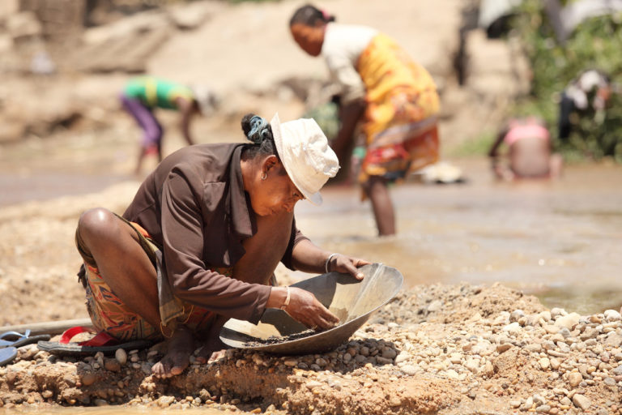
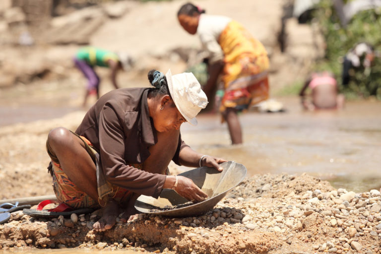

AGRICULTURE DE SAVA
La région de la SAVA possède un potentiel agronomique important dû à ses conditions climatiques humides et à l’aptitude des sols favorables à toutes cultures tropicales et tempérées.
En ce qui concerne les surfaces cultivées , il est constaté une évolution progressive. Elle est surnommer comme une REGION PARFUMEE parcequ'elle occupe 40% de l'exportation international de vanille, et de quelque autres épices parfumées comme le girofle, le café etc...
La vanille constitue la deuxième culture de Madagascar après le café. Elle est la première grande culture de rente de SAVA avec 87 % des ménages qui pratique sa culture. Le café n’occupe que la seconde place au niveau régional avec 57 % de pratiquants; la 3e place revient au girofle avec à peine 30 % de cultivateurs. La culture vanillière, méconnue du monde extérieur à la filière, pose des problèmes locaux ayant des incidences réelles sur l’économie nationale
ELEVAGE
L'élevage bovin est le plus pratiqué dans la plupart des sous-préfectures. Les porcs ne sont présents significativement que dans les sous-préfectures d'Antalaha, de Sambava et d'Andapa. Concernant les ovins et les caprins, leur élevage est presque confidentiel. Le poulet est présent dans plus de la moitié des exploitations, et dans une moindre mesure le canard (30 % des exploitations). Au titre des activités annexes, on trouve dans la sous-préfecture d'Andapa environ 7 % d'exploitations pratiquant la pisciculture. L’élevage et les activités commerciales et connexes qui en dépendent sont essentiellement localisés dans la sous-préfecture de Vohémar où le climat est relativement sec et les formations graminéennes couvrent une grande étendue .
RESSOURCES MINIERES
Parmi les ressources du sous-sol existantes dans la SAVA l’on peut noter le quartz la tourmaline, le béryl et l’or. La production annuelle varie d’une Sous-préfecture à l’autre. Pour le quartz, la production est estimée à 131 tonnes, exploitées par la Taillerie industrielle d’Antalaha (TIA), 15 tonnes à Sambava et 85 tonnes à Vohémar et 0,100 tonne à Andapa. L’on produit 950 kg de Tourmaline à Vohémar et une tonne de Béryl à Sambava. Les données sur la production de l’or dans la région ne sont pas disponibles sinon erronées. Pourtant, dans les milieux des « affaires » on parle beaucoup de l’or. En effet, il y a deux villages qui viennent de s’ériger ; ils ont été créés et peuplés quasi exclusivement de chercheurs. Il s’agit d’Ambolamena dans la Commune Rurale d’Ampohibe, Sous-préfectures d’Antalaha et de Daraina; Sous-préfectures de Vohémar. Dans ces deux villages, la recherche et l’extraction de l’or se font d’une manière quasi anarchique au vu et au su de tout le monde.
 
